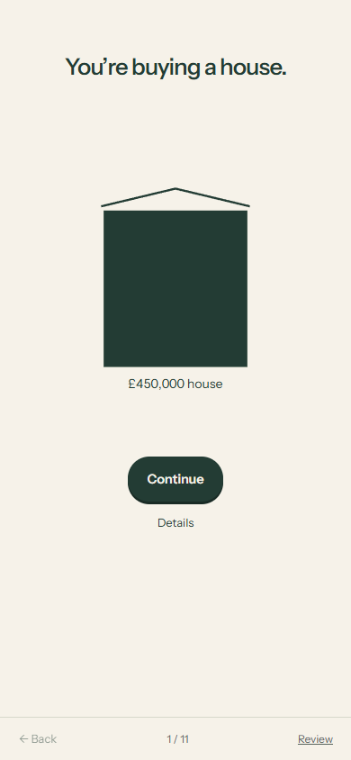
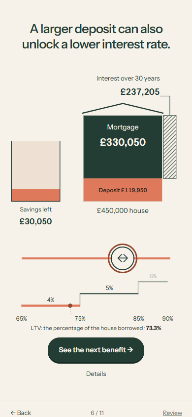
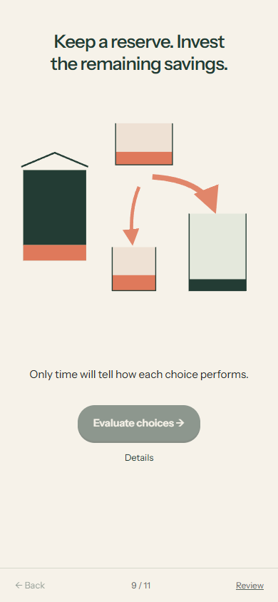
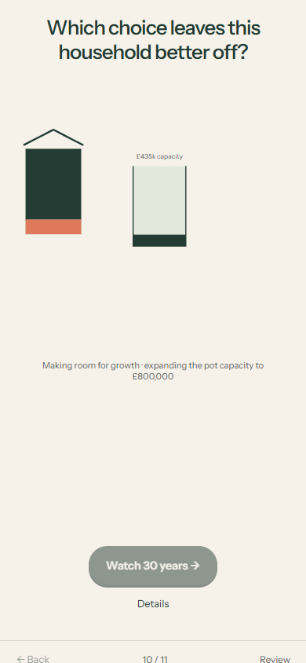
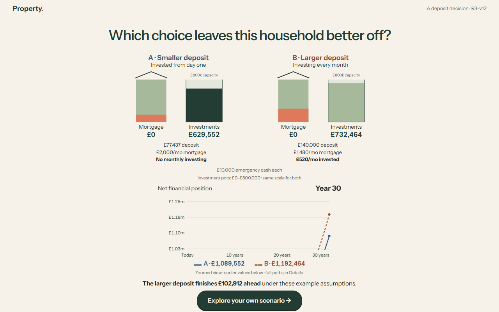
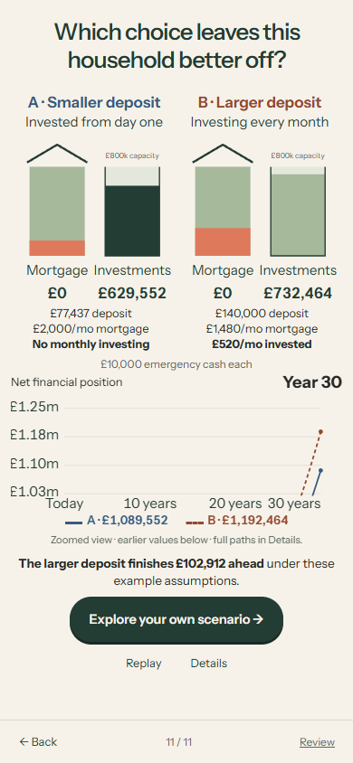

One deposit decision,
followed through.
One evolving illustration: the house, savings, monthly allowance and two ways to invest. Eleven user-paced scenes end with one five-second comparison.
Awaiting owner visual feedback. No R4 or main merge. R3-v11 remains available.
The calculated example
The larger deposit finishes ahead after 30 years under these assumptions. Exact difference: £102,911.67.
Both households start with a £450,000 house, £150,000 savings after costs, £10,000 cash reserve and £2,000 per month after everyday expenses.
| At purchase | A · Smaller deposit | B · Larger deposit |
|---|---|---|
| Deposit, displayed | £77,436.77 | £140,000.00 |
| Mortgage rate | 5% | 4% |
| Opening investment | £62,563.23 | £0.00 |
| Monthly mortgage | £2,000.00 | £1,479.99 |
| Monthly investment | £0.00 | £520.01 |
| Year-30 net position | £1,089,552.36 | £1,192,464.03 |
The affordable floor is computed across the maximum-inclusive LTV bands: 75% at 4%, 85% at 5%, and 90% at 6%. The first interest lesson holds 5% constant; the next lesson introduces the actual staircase.
Exact fixed50 Decimal values drive every calculation; money displays use HALF_UP. A uses the exact affordable boundary, then slider input moves in whole pounds. A invests only at purchase. Its negligible final amortisation residual is reconciled separately at zero return. B invests its genuine surplus at each month end. Investments assume constant 8% annual-effective growth; reserve return is 0%; house value stays constant. No tax, inflation, fees, refinancing or overpayments. This is neither an optimum nor a forecast. Exact financial evidence.
What changed
- The centred house, separate savings and monthly limit introduce one idea at a time. The three larger-deposit benefits share stable house, savings and slider anchors.
- The slider has a hard affordability floor, 48px thumb and 302px travel at 390px. Try a slow drag, reversal and movement outside the original handle.
- The smaller-deposit benefit returns directly to the canonical amount. Savings then visibly split into reserve and opening investment. A carries into the left comparison; B appears at right.
- Pot capacity visibly expands for comparison, then stays fixed at £800,000 throughout playback. Both financial-position lines share one smoothly moving linear view. Earlier history is clipped truthfully; full paths remain in Details.
- The result holds without an extra click. The final action opens an explicit prototype handoff and preserves the result.
Superseded: a required smaller-deposit win, monthly investing for A, the difference-only graph, fixed main vertical viewport, one-year teaser, unaffordable slider territory and recurring eyebrow.
Uncut, normal-speed journeys
Mouse operation on desktop and Chromium touch emulation on phone, including full-range dragging and reversals, a manual selection returning to A, allocation, comparison and the five-second playback. No physical phone was tested.
Desktop · 1280 × 800
Phone emulation · 390 × 844
Scenes and transitions












Verification and limits
Ten Python financial tests, four JavaScript tests, 15 complete worker/CPython cases, 66 scene/viewport checks, 44 enlarged-text checks and normal/reduced-motion touch lifecycles pass. Independent 100-digit references check every mortgage, growth and net-position month. Threshold triples, opening allocation, equal funding and contribution timing are covered.
A fresh independent implementation review found two Important issues: cancellation of a pending canonical request and small paired phone labels. Both were reproduced and fixed. A delayed-worker regression, minimum readable label sizes and intermediate transition frames were checked. Uncut recordings were played fully at 1× and decoded frames inspected.
Backend: one clean run of all 4,730 tests passed, with two optional-PyYAML warnings. Ruff and strict mypy on 53 source files passed. No backend code changed.
Physical-device, Safari/Firefox, spoken screen-reader and novice-comprehension testing remain unperformed. The personal calculator is unavailable; the explicit handoff collects no inputs. Hosted deployment and source CI status are recorded separately in the identity receipt.
Recorded application: 9f148524cbfacbd394965d2acf81d8c75827ffef. Tested evidence: ef590cca5ce68b1371d53ce4f83f25b47831320b. Source and verification. Draft PR.
Visual feedback
Does each scene introduce one clear idea? Can you follow the same money into the comparison? Is the phone control comfortable? Are the shared graph scale and held outcome understandable?